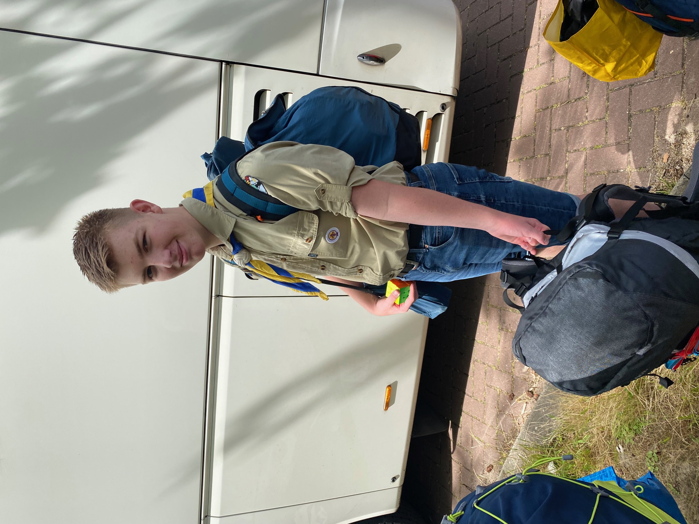

Mijn eerste hobby is het oplossen van ingewikkelde puzzels.
Als peuter puzzelde ik onderste boven.
En toen ik ouder werd vezamelde ik steeds meer puzzels en denkspellen om mij heen.
Later werd vooral het oplossen van de rubix cube een grote hobby.
Ik heb er ondertussen ook 29 verschillende.
Na het puzzelen volgde, eind basisschool, al snel mijn interesse in wiskunde. Vanwege deze interesse mocht ik meedoen met extra wiskunde lessen die werden aangeboden door een gepensioneerde wiskunde docent. Op de middelbare school startte ik daardoor met een voorsprong. Ik heb mijn eindexamen afgesloten met een 9 voor wiskunde en inmiddels doe ik voor mijn plezier Havo Wiskunde B erbij. Ook bij wiskunde ben ik dol op gepuzzel met berekeningen, formules en grafieken.
Naast al dat gepuzzel moet ook ik af en toe naar buiten. Het liefst doe ik dat bij scouting waar ik met vrienden op kamp ga, in tenten slaap en kampvuren maak. Hoe viezer we thuiskomen, hoe meer plezier we hebben gehad!
